Repères de la famille
Soixante-trois armes d’assaut : c’est la famille la plus large du catalogue, et de loin la plus travaillée par les joueurs. Elles se partagent en deux sous-familles de jeu, le fusil d’assaut et la carabine d’assaut, et couvrent onze calibres — du 5,45 x 39 mm au 12,7 x 55 mm, en passant par le .366 TKM et le 6,8 x 51 mm, deux calibres que l’on ne trouve que là.
Les mesures ci-dessous sont celles de l’arme nue, telles que l’export les publie. Elles servent à comparer les armes entre elles à configuration identique ; elles changent dès qu’une pièce est montée, et les presets publiés plus bas donnent ces valeurs modifiées.
20 à 95
Ergonomie. L’amplitude est large : la Steyr AUG A1 et sa version A3 occupent le haut du classement avec 95, tandis que le bas de la famille reste à 20. L’ergonomie conditionne la vitesse de manipulation et de visée.
70 à 210
Recul vertical. Le plus contenu de la famille est l’AS VAL, à 70, le SR-3M à 74 et le Desert Tech MDR à 79. Les valeurs hautes, autour de 210, demandent une maîtrise de la compensation.
40 à 900
Cadence. Entre la carabine monocoup la plus lente et les armes automatiques à 900 coups par minute, la famille couvre tout l’éventail du jeu.
Le point commun de la famille. Le 5,56 x 45 mm NATO et le 5,45 x 39 mm couvrent à eux seuls trente-deux des soixante-trois armes. La question qui revient n’est donc pas « quel fusil d’assaut choisir » mais « quelle munition est disponible et à quel prix » : c’est ce que tranche la page sur la balistique.
Le catalogue de la famille
Les soixante-trois armes d’assaut de l’export, avec leurs mesures à configuration de base et le nombre de munitions et de presets publiés pour chacune.
| Image | Arme | Calibre | Ergonomie | Recul vertical | Recul horizontal | Cadence (c/min) | Distance efficace (m) | Modes de tir | Munitions | Presets |
|---|---|---|---|---|---|---|---|---|---|---|
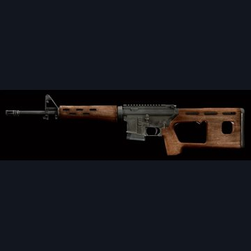 | Carabine ADAR 2-15 5,56 x 45 mm | 5,56 x 45 mm NATO | 48 | 120 | 344 | 800 | 500 | Semi-automatique | 11 | 2 |
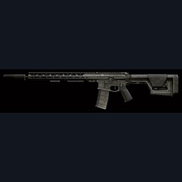 | Carabine Lone Star TX-15 DML 5,56 x 45 mm | 5,56 x 45 mm NATO | 50 | 101 | 289 | 800 | 500 | Semi-automatique | 11 | 2 |
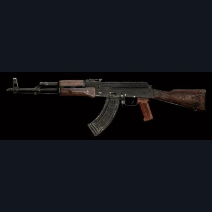 | Carabine Molot Arms VPO-136 "Vepr-KM" 7,62 x 39 mm | 7,62 x 39 mm | 30 | 149 | 378 | 600 | 400 | Semi-automatique | 9 | 1 |
 | Carabine Molot Arms VPO-209 .366 TKM | .366 TKM | 30 | 154 | 386 | 600 | 300 | Semi-automatique | 4 | 1 |
 | Carabine SAG AK-545 5,45 x 39 mm | 5,45 x 39 mm | 50 | 91 | 263 | 650 | 650 | Semi-automatique | 13 | 1 |
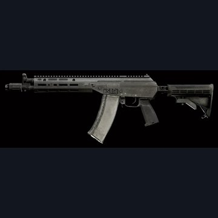 | Carabine SAG AK-545 Courte 5,45 x 39 mm | 5,45 x 39 mm | 53 | 93 | 270 | 650 | 650 | Semi-automatique | 13 | 1 |
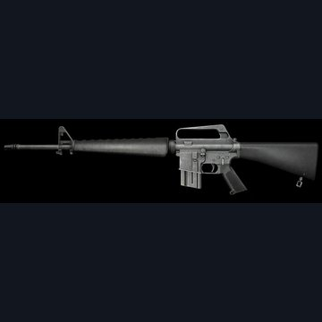 | Colt M16A1 5.56x45 assault rifle | 5,56 x 45 mm NATO | 48 | 121 | 346 | 800 | 500 | Semi-automatique, Automatique | 11 | 6 |
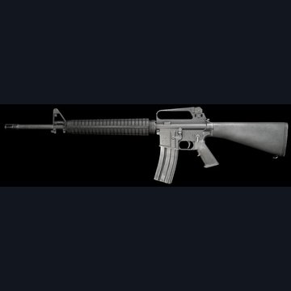 | Colt M16A2 5.56x45 assault rifle | 5,56 x 45 mm NATO | 48 | 117 | 338 | 800 | 500 | Semi-automatique, Burst | 11 | 1 |
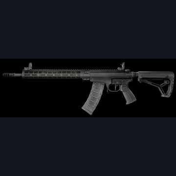 | Custom Guns NL545 (DI) 5.45x39 assault rifle | 5,45 x 39 mm | 45 | 109 | 320 | 800 | 500 | Semi-automatique, Automatique | 13 | 2 |
 | Custom Guns NL545 (GP) 5.45x39 assault rifle | 5,45 x 39 mm | 48 | 114 | 330 | 850 | 500 | Semi-automatique, Automatique | 13 | 3 |
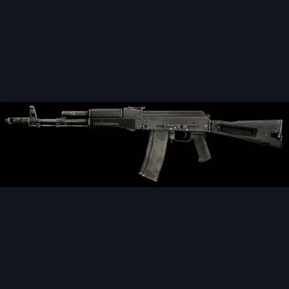 | Fusil d'assaut AK-101 5,56 x 45 mm | 5,56 x 45 mm NATO | 35 | 98 | 248 | 650 | 650 | Semi-automatique, Automatique | 11 | 1 |
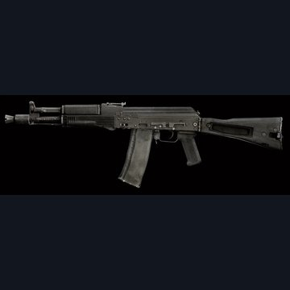 | Fusil d'assaut AK-102 5,56 x 45 mm | 5,56 x 45 mm NATO | 43 | 103 | 280 | 600 | 650 | Semi-automatique, Automatique | 11 | 1 |
 | Fusil d'assaut AK-103 7,62 x 39 mm | 7,62 x 39 mm | 35 | 118 | 295 | 600 | 650 | Semi-automatique, Automatique | 9 | 1 |
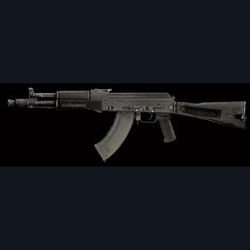 | Fusil d'assaut AK-104 7,62 x 39 mm | 7,62 x 39 mm | 43 | 120 | 315 | 600 | 650 | Semi-automatique, Automatique | 9 | 3 |
 | Fusil d'assaut AK-105 5,45 x 39 mm | 5,45 x 39 mm | 43 | 100 | 277 | 600 | 650 | Semi-automatique, Automatique | 13 | 2 |
| Fusil d'assaut AK-74N 5,45 x 39 mm | 5,45 x 39 mm | 31 | 96 | 244 | 650 | 650 | Semi-automatique, Automatique | 13 | 3 | |
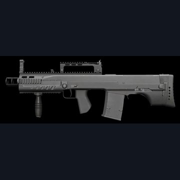 | Fusil d'assaut ASh-12 12,7 x 55 mm | 12,7 x 55 mm | 55 | 128 | 425 | 650 | 650 | Semi-automatique, Automatique | 3 | 3 |
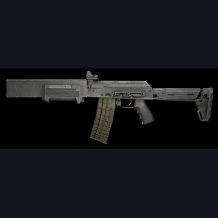 | Fusil d'assaut Aklys Defense Velociraptor .300 AAC Blackout | 7,62 x 35 mm | 35 | 101 | 272 | 600 | 650 | Semi-automatique, Automatique | 6 | 1 |
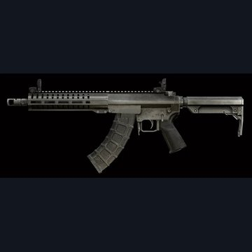 | Fusil d'assaut CMMG Mk47 Mutant 7,62 x 39 mm | 7,62 x 39 mm | 38 | 136 | 338 | 650 | 500 | Semi-automatique, Automatique | 9 | 3 |
 | Fusil d'assaut Colt M4A1 5,56 x 45 mm | 5,56 x 45 mm NATO | 48 | 119 | 342 | 800 | 500 | Semi-automatique, Automatique | 11 | 19 |
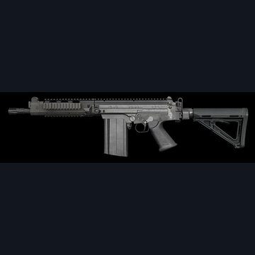 | Fusil d'assaut DS Arms SA-58 7,62 x 51 mm | 7,62 x 51 mm NATO | 30 | 210 | 417 | 700 | 900 | Semi-automatique, Automatique | 8 | 8 |
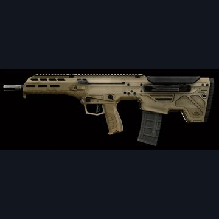 | Fusil d'assaut Desert Tech MDR 5,56 x 45 mm | 5,56 x 45 mm NATO | 67 | 79 | 260 | 650 | 500 | Semi-automatique, Automatique | 11 | 4 |
 | Fusil d'assaut Desert Tech MDR 7,62 x 51 mm | 7,62 x 51 mm NATO | 67 | 125 | 310 | 650 | 500 | Semi-automatique, Automatique | 8 | 4 |
 | Fusil d'assaut FN SCAR-H 7,62 x 51 mm | 7,62 x 51 mm NATO | 45 | 200 | 505 | 600 | 500 | Semi-automatique, Automatique | 8 | 3 |
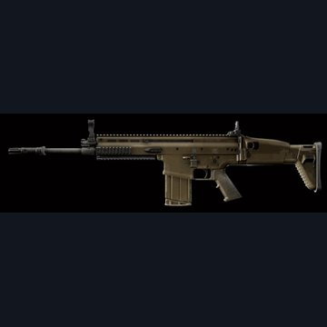 | Fusil d'assaut FN SCAR-H 7,62 x 51 mm (FDE) | 7,62 x 51 mm NATO | 45 | 200 | 505 | 600 | 500 | Semi-automatique, Automatique | 8 | 5 |
 | Fusil d'assaut FN SCAR-H X-17 7,62 x 51 mm | 7,62 x 51 mm NATO | 47 | 200 | 505 | 600 | 500 | Semi-automatique, Automatique | 8 | 1 |
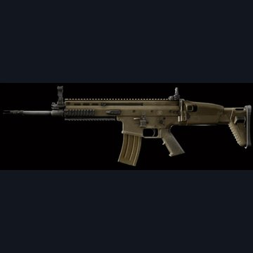 | Fusil d'assaut FN SCAR-L 5,56 x 45 mm | 5,56 x 45 mm NATO | 45 | 90 | 280 | 650 | 500 | Semi-automatique, Automatique | 11 | 1 |
 | Fusil d'assaut FN SCAR-L 5,56 x 45 mm (FDE) | 5,56 x 45 mm NATO | 45 | 90 | 280 | 650 | 500 | Semi-automatique, Automatique | 11 | 3 |
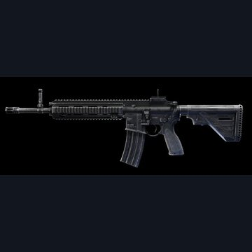 | Fusil d'assaut HK 416A5 5,56 x 45 mm | 5,56 x 45 mm NATO | 51 | 125 | 358 | 850 | 500 | Semi-automatique, Automatique | 11 | 1 |
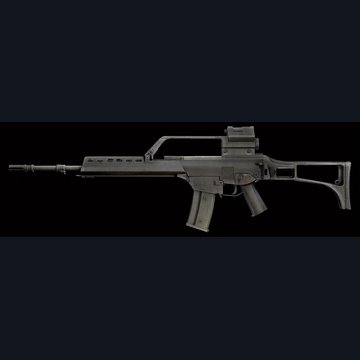 | Fusil d'assaut HK G36 5,56 x 45 mm | 5,56 x 45 mm NATO | 60 | 106 | 298 | 750 | 500 | Semi-automatique, Burst, Automatique | 11 | 8 |
 | Fusil d'assaut Kalashnikov AK-12 5,45 x 39 mm | 5,45 x 39 mm | 36 | 100 | 302 | 700 | 800 | Semi-automatique, Automatique, Burst | 13 | 5 |
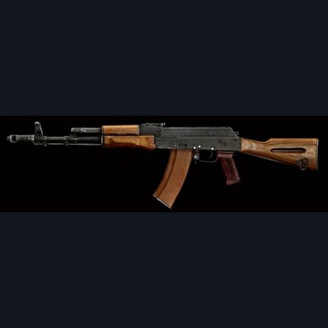 | Fusil d'assaut Kalashnikov AK-74 5,45 x 39 mm | 5,45 x 39 mm | 30 | 96 | 244 | 650 | 650 | Semi-automatique, Automatique | 13 | 3 |
 | Fusil d'assaut Kalashnikov AK-74M 5,45 x 39 mm | 5,45 x 39 mm | 33 | 95 | 241 | 650 | 650 | Semi-automatique, Automatique | 13 | 2 |
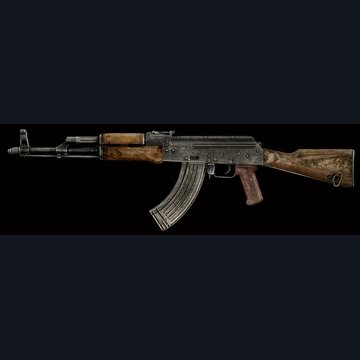 | Fusil d'assaut Kalashnikov AKM 7,62 x 39 mm | 7,62 x 39 mm | 28 | 121 | 298 | 600 | 400 | Semi-automatique, Automatique | 9 | 6 |
 | Fusil d'assaut Kalashnikov AKMN 7,62 x 39 mm | 7,62 x 39 mm | 28 | 121 | 298 | 600 | 400 | Semi-automatique, Automatique | 9 | 2 |
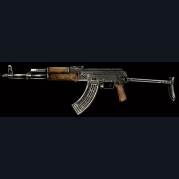 | Fusil d'assaut Kalashnikov AKMS 7,62 x 39 mm | 7,62 x 39 mm | 26 | 121 | 298 | 600 | 400 | Semi-automatique, Automatique | 9 | 3 |
 | Fusil d'assaut Kalashnikov AKMSN 7,62 x 39 mm | 7,62 x 39 mm | 26 | 121 | 298 | 600 | 400 | Semi-automatique, Automatique | 9 | 2 |
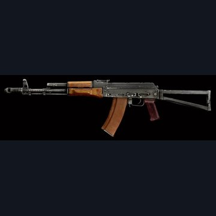 | Fusil d'assaut Kalashnikov AKS-74N 5,45 x 39 mm | 5,45 x 39 mm | 32 | 90 | 244 | 650 | 650 | Semi-automatique, Automatique | 13 | 1 |
 | Fusil d'assaut Kalashnikov AKS-74U 5,45 x 39 mm | 5,45 x 39 mm | 44 | 108 | 272 | 650 | 300 | Semi-automatique, Automatique | 13 | 2 |
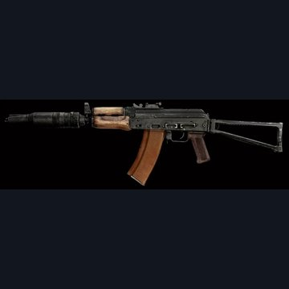 | Fusil d'assaut Kalashnikov AKS-74UB 5,45 x 39 mm | 5,45 x 39 mm | 44 | 108 | 272 | 650 | 300 | Semi-automatique, Automatique | 13 | 1 |
 | Fusil d'assaut Kalashnikov AKS-74UN 5,45 x 39 mm | 5,45 x 39 mm | 44 | 108 | 272 | 650 | 300 | Semi-automatique, Automatique | 13 | 3 |
 | Fusil d'assaut Rifle Dynamics RD-704 7,62 x 39 mm | 7,62 x 39 mm | 50 | 135 | 314 | 600 | 650 | Semi-automatique, Automatique | 9 | 2 |
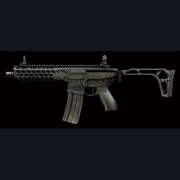 | Fusil d'assaut SIG MCX .300 AAC Blackout | 7,62 x 35 mm | 43 | 127 | 351 | 800 | 500 | Semi-automatique, Automatique | 6 | 4 |
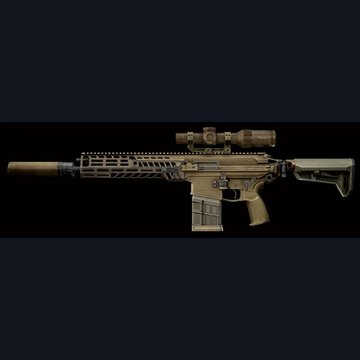 | Fusil d'assaut SIG MCX SPEAR 6,8 x 51 mm | 6,8 x 51 mm | 46 | 143 | 425 | 800 | 500 | Semi-automatique, Automatique | 2 | 4 |
 | Fusil d'assaut Steyr AUG A1 5,56 x 45 mm | 5,56 x 45 mm NATO | 95 | 90 | 265 | 715 | 500 | Semi-automatique, Automatique | 11 | 1 |
 | Fusil d'assaut Steyr AUG A3 5,56 x 45 mm | 5,56 x 45 mm NATO | 95 | 87 | 248 | 715 | 500 | Semi-automatique, Automatique | 11 | 3 |
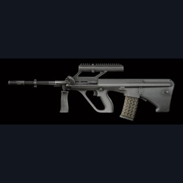 | Fusil d'assaut Steyr AUG A3 5,56 x 45 mm (noir) | 5,56 x 45 mm NATO | 95 | 87 | 248 | 715 | 500 | Semi-automatique, Automatique | 11 | 1 |
 | Fusils d'assaut Kalashnikov AKS-74 5,45 x 39 mm | 5,45 x 39 mm | 31 | 90 | 244 | 650 | 650 | Semi-automatique, Automatique | 13 | 1 |
 | HK 416A5 5.56x45 assault rifle (RAL 8000) | 5,56 x 45 mm NATO | 51 | 125 | 358 | 850 | 500 | Semi-automatique, Automatique | 11 | 1 |
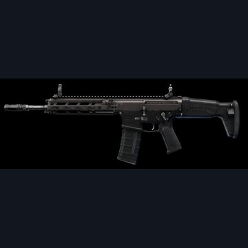 | Howa Type 20 5.56x45 assault rifle | 5,56 x 45 mm NATO | 50 | 97 | 270 | 700 | 500 | Semi-automatique, Automatique | 11 | 1 |
 | Kalashnikov AK-308 7.62x51 assault rifle | 7,62 x 51 mm NATO | 33 | 152 | 325 | 700 | 800 | Semi-automatique, Automatique | 8 | 4 |
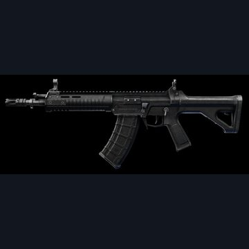 | Norinco QBZ-191 5.8x42 assault rifle | 5,8 x 42 mm | 48 | 114 | 330 | 750 | 500 | Semi-automatique, Automatique | 4 | 2 |
 | Radian Weapons Model 1 FA 5.56x45 assault rifle | 5,56 x 45 mm NATO | 51 | 112 | 335 | 800 | 500 | Semi-automatique, Automatique | 11 | 1 |
 | AS VAL MOD.4 9x39 special assault rifle | 9 x 39 mm | 46 | 70 | 260 | 900 | 400 | Semi-automatique, Automatique | 6 | 3 |
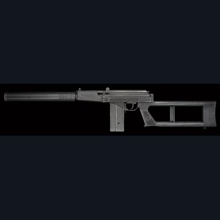 | Carabine KBP VSK-94 9 x 39 mm | 9 x 39 mm | 50 | 110 | 280 | 700 | 400 | Semi-automatique, Automatique | 6 | 2 |
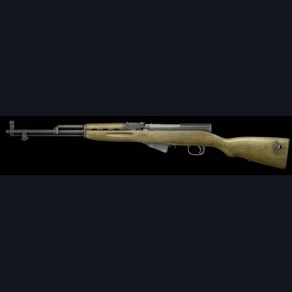 | Carabine Molot Arms Simonov OP-SKS 7,62 x 39 mm | 7,62 x 39 mm | 40 | 155 | 360 | 40 | 400 | Semi-automatique | 9 | 5 |
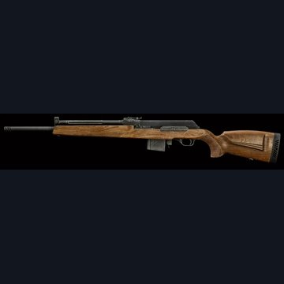 | Carabine Molot Arms VPO-101 "Vepr-Hunter" 7,62 x 51 mm | 7,62 x 51 mm NATO | 29 | 150 | 585 | 600 | 400 | Semi-automatique | 8 | 2 |
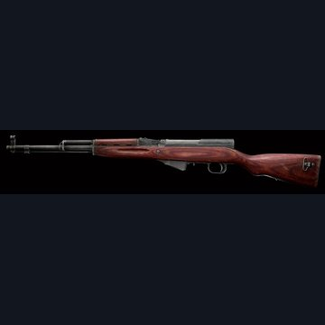 | Carabine TOZ Simonov SKS 7,62 x 39 mm | 7,62 x 39 mm | 40 | 155 | 360 | 40 | 400 | Semi-automatique | 9 | 2 |
 | Carabine Tokarev SVT-40 7,62 x 54 mm R | 7,62 x 54 mm R | 20 | 175 | 675 | 50 | 400 | Semi-automatique | 9 | 2 |
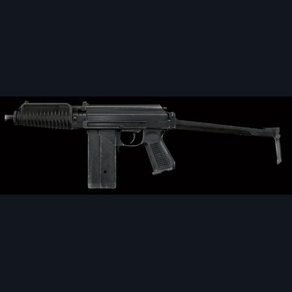 | Carabine d'assaut KBP 9A-91 9 x 39 mm | 9 x 39 mm | 50 | 110 | 280 | 700 | 400 | Semi-automatique, Automatique | 6 | 2 |
 | Fusil automatique Tokarev AVT-40 7,62 x 54 mm R | 7,62 x 54 mm R | 20 | 175 | 675 | 750 | 400 | Semi-automatique, Automatique | 9 | 1 |
 | Fusil d'assaut compact SR-3M 9 x 39 mm | 9 x 39 mm | 45 | 74 | 255 | 900 | 400 | Semi-automatique, Automatique | 6 | 2 |
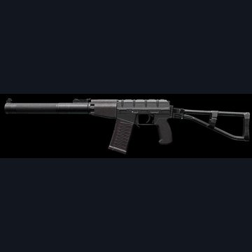 | Fusil d'assaut spécial AS VAL 9 x 39 mm | 9 x 39 mm | 43 | 80 | 270 | 900 | 400 | Semi-automatique, Automatique | 6 | 3 |
La colonne Munitions indique le nombre de cartouches compatibles recensées pour cette arme dans le catalogue des munitions ; elle ne dit pas lesquelles sont achetables ni à quel prix. Le nombre de presets est la valeur relevée dans l’export, où chaque arme possède au moins son preset par défaut.
Presets publiés
Cent soixante-quatorze presets sont rattachés aux armes de cette famille, dont le preset par défaut de chacune. Le tableau ci-dessous reprend les presets publiés, avec leurs mesures propres : l’ergonomie, le recul et la précision de chaque configuration.
| Preset | Ergonomie | Recul vertical | Recul horizontal | Précision (MOA) | État |
|---|---|---|---|---|---|
| Carabine ADAR 2-15 5,56 x 45 mm PK-06Carabine ADAR 2-15 5,56 x 45 mm | 70.4 | 77 | 222 | 2.54 | preset publié |
| Carabine Lone Star TX-15 DML 5,56 x 45 mm D-WARRIORCarabine Lone Star TX-15 DML 5,56 x 45 mm | 78 | 58 | 166 | 2.75 | preset publié |
| Colt M16A1 5.56x45 assault rifle M723Colt M16A1 5.56x45 assault rifle | 59.5 | 81 | 231 | 2.48 | preset publié |
| Colt M16A1 5.56x45 assault rifle M727Colt M16A1 5.56x45 assault rifle | 52.5 | 79 | 225 | 2.17 | preset publié |
| Colt M16A1 5.56x45 assault rifle Mk.12 mod.0Colt M16A1 5.56x45 assault rifle | 38.5 | 66 | 188 | 1.24 | preset publié |
| Colt M16A1 5.56x45 assault rifle Mk.12 mod.1Colt M16A1 5.56x45 assault rifle | 37.5 | 63 | 181 | 1.24 | preset publié |
| Colt M16A1 5.56x45 assault rifle T-1Colt M16A1 5.56x45 assault rifle | 38.8 | 72 | 207 | 1.58 | preset publié |
| Custom Guns NL545 (DI) 5.45x39 assault rifle Pilad 4x32Custom Guns NL545 (DI) 5.45x39 assault rifle | 33.5 | 71 | 210 | 1.72 | preset publié |
| Custom Guns NL545 (GP) 5.45x39 assault rifle PROCustom Guns NL545 (GP) 5.45x39 assault rifle | 62.7 | 64 | 184 | 1.65 | preset publié |
| Custom Guns NL545 (GP) 5.45x39 assault rifle Vudu 1-6x24Custom Guns NL545 (GP) 5.45x39 assault rifle | 54.3 | 68 | 198 | 2.34 | preset publié |
| Fusil d'assaut AK-104 7,62 x 39 mm RPKT mod.1Fusil d'assaut AK-104 7,62 x 39 mm | 51.3 | 73 | 192 | 2.27 | preset publié |
| Fusil d'assaut AK-104 7,62 x 39 mm T-SAWFusil d'assaut AK-104 7,62 x 39 mm | 53.5 | 76 | 200 | 2.27 | preset publié |
| Fusil d'assaut AK-105 5,45 x 39 mm HHS-1Fusil d'assaut AK-105 5,45 x 39 mm | 71 | 73 | 203 | 2.06 | preset publié |
| Fusil d'assaut AK-74N 5,45 x 39 mm MagpulFusil d'assaut AK-74N 5,45 x 39 mm | 57.400000000000006 | 62 | 159 | 1.96 | preset publié |
| Fusil d'assaut AK-74N 5,45 x 39 mm PS320 1/6xFusil d'assaut AK-74N 5,45 x 39 mm | 50.05 | 59 | 151 | 1.96 | preset publié |
| Fusil d'assaut ASh-12 12,7 x 55 mm SilencéFusil d'assaut ASh-12 12,7 x 55 mm | 41 | 115 | 383 | 1.79 | preset publié |
| Fusil d'assaut ASh-12 12,7 x 55 mm TACFusil d'assaut ASh-12 12,7 x 55 mm | 37 | 113 | 376 | 1.79 | preset publié |
| Fusil d'assaut CMMG Mk47 Mutant 7,62 x 39 mm EXPS3Fusil d'assaut CMMG Mk47 Mutant 7,62 x 39 mm | 43.5 | 75 | 186 | 2.06 | preset publié |
| Fusil d'assaut CMMG Mk47 Mutant 7,62 x 39 mm MaceFusil d'assaut CMMG Mk47 Mutant 7,62 x 39 mm | 63.2 | 87 | 216 | 2.96 | preset publié |
| Fusil d'assaut Colt M4A1 5,56 x 45 mm 2k17 NYFusil d'assaut Colt M4A1 5,56 x 45 mm | 68.4 | 69 | 198 | 2.75 | preset publié |
| Fusil d'assaut Colt M4A1 5,56 x 45 mm CustomFusil d'assaut Colt M4A1 5,56 x 45 mm | 50.4 | 69 | 200 | 2.17 | preset publié |
| Fusil d'assaut Colt M4A1 5,56 x 45 mm ECHO1Fusil d'assaut Colt M4A1 5,56 x 45 mm | 66.5 | 67 | 191 | 2.17 | preset publié |
| Fusil d'assaut Colt M4A1 5,56 x 45 mm EXPS3Fusil d'assaut Colt M4A1 5,56 x 45 mm | 24.5 | 54 | 156 | 2.17 | preset publié |
| Fusil d'assaut Colt M4A1 5,56 x 45 mm Flash SOPMOD IIFusil d'assaut Colt M4A1 5,56 x 45 mm | 58 | 74 | 213 | 2.75 | preset publié |
| Fusil d'assaut Colt M4A1 5,56 x 45 mm KAC RISFusil d'assaut Colt M4A1 5,56 x 45 mm | 59.5 | 76 | 218 | 2.17 | preset publié |
| Fusil d'assaut Colt M4A1 5,56 x 45 mm LVOAFusil d'assaut Colt M4A1 5,56 x 45 mm | 75.39999999999999 | 70 | 200 | 2.17 | preset publié |
| Fusil d'assaut Colt M4A1 5,56 x 45 mm REAP-IRFusil d'assaut Colt M4A1 5,56 x 45 mm | 75.5 | 66 | 191 | 2.75 | preset publié |
| Fusil d'assaut Colt M4A1 5,56 x 45 mm SAIFusil d'assaut Colt M4A1 5,56 x 45 mm | 81.3 | 71 | 205 | 2.75 | preset publié |
| Fusil d'assaut Colt M4A1 5,56 x 45 mm SOPMOD IFusil d'assaut Colt M4A1 5,56 x 45 mm | 60 | 77 | 223 | 2.17 | preset publié |
| Fusil d'assaut Colt M4A1 5,56 x 45 mm SOPMOD IIFusil d'assaut Colt M4A1 5,56 x 45 mm | 63.5 | 74 | 212 | 2.75 | preset publié |
| Fusil d'assaut Colt M4A1 5,56 x 45 mm Space TrooperFusil d'assaut Colt M4A1 5,56 x 45 mm | 58.05 | 67 | 193 | 2.75 | preset publié |
| Fusil d'assaut Colt M4A1 5,56 x 45 mm T-1Fusil d'assaut Colt M4A1 5,56 x 45 mm | 58 | 74 | 213 | 2.75 | preset publié |
| Fusil d'assaut Colt M4A1 5,56 x 45 mm T.O 2K24Fusil d'assaut Colt M4A1 5,56 x 45 mm | 62.8 | 64 | 183 | 1.38 | preset publié |
| Fusil d'assaut Colt M4A1 5,56 x 45 mm Ton-ExFusil d'assaut Colt M4A1 5,56 x 45 mm | 69.6 | 72 | 206 | 2.75 | preset publié |
| Fusil d'assaut Colt M4A1 5,56 x 45 mm USASOC-IFusil d'assaut Colt M4A1 5,56 x 45 mm | 64.4 | 74 | 211 | 2.75 | preset publié |
| Fusil d'assaut Colt M4A1 5,56 x 45 mm USASOC-IIFusil d'assaut Colt M4A1 5,56 x 45 mm | 53 | 73 | 209 | 2.17 | preset publié |
| Fusil d'assaut Colt M4A1 5,56 x 45 mm XPS3-0Fusil d'assaut Colt M4A1 5,56 x 45 mm | 65.8 | 64 | 183 | 1.38 | preset publié |
| Fusil d'assaut DS Arms SA-58 7,62 x 51 mm AUTFusil d'assaut DS Arms SA-58 7,62 x 51 mm | 7 | 105 | 208 | 1 | preset publié |
| Fusil d'assaut DS Arms SA-58 7,62 x 51 mm BELFusil d'assaut DS Arms SA-58 7,62 x 51 mm | 20 | 109 | 217 | 1 | preset publié |
| Fusil d'assaut DS Arms SA-58 7,62 x 51 mm OSWFusil d'assaut DS Arms SA-58 7,62 x 51 mm | 50 | 134 | 265 | 2.75 | preset publié |
| Fusil d'assaut DS Arms SA-58 7,62 x 51 mm PBRFusil d'assaut DS Arms SA-58 7,62 x 51 mm | 24.700000000000003 | 109 | 217 | 1 | preset publié |
| Fusil d'assaut DS Arms SA-58 7,62 x 51 mm SPRFusil d'assaut DS Arms SA-58 7,62 x 51 mm | 32.8 | 117 | 231 | 1 | preset publié |
| Fusil d'assaut DS Arms SA-58 7,62 x 51 mm X-FALFusil d'assaut DS Arms SA-58 7,62 x 51 mm | 50.15 | 120 | 238 | 2.75 | preset publié |
| Fusil d'assaut DS Arms SA-58 7,62 x 51 mm XPS3-0Fusil d'assaut DS Arms SA-58 7,62 x 51 mm | 18.65 | 96 | 190 | 1 | preset publié |
| Fusil d'assaut Desert Tech MDR 5,56 x 45 mm EXPS3Fusil d'assaut Desert Tech MDR 5,56 x 45 mm | 72.4 | 65 | 216 | 1.79 | preset publié |
| Fusil d'assaut Desert Tech MDR 5,56 x 45 mm HHS-1 TanFusil d'assaut Desert Tech MDR 5,56 x 45 mm | 60 | 66 | 218 | 1.79 | preset publié |
| Fusil d'assaut Desert Tech MDR 5,56 x 45 mm ONEFusil d'assaut Desert Tech MDR 5,56 x 45 mm | 63 | 69 | 226 | 1.79 | preset publié |
| Fusil d'assaut Desert Tech MDR 7,62 x 51 mm HCOFusil d'assaut Desert Tech MDR 7,62 x 51 mm | 56.3 | 104 | 257 | 1.72 | preset publié |
| Fusil d'assaut Desert Tech MDR 7,62 x 51 mm KilltubeFusil d'assaut Desert Tech MDR 7,62 x 51 mm | 56.3 | 104 | 258 | 1.72 | preset publié |
| Fusil d'assaut Desert Tech MDR 7,62 x 51 mm T.O 2K24Fusil d'assaut Desert Tech MDR 7,62 x 51 mm | 47.7 | 99 | 246 | 1.72 | preset publié |
| Fusil d'assaut FN SCAR-H 7,62 x 51 mm FLIR RS-32Fusil d'assaut FN SCAR-H 7,62 x 51 mm | 35.4 | 102 | 257 | 2.06 | preset publié |
| Fusil d'assaut FN SCAR-H 7,62 x 51 mm UH-1Fusil d'assaut FN SCAR-H 7,62 x 51 mm | 40.8 | 90 | 226 | 1.58 | preset publié |
| Fusil d'assaut FN SCAR-H 7,62 x 51 mm (FDE) CQCFusil d'assaut FN SCAR-H 7,62 x 51 mm (FDE) | 46 | 116 | 293 | 2.58 | preset publié |
| Fusil d'assaut FN SCAR-H 7,62 x 51 mm (FDE) FaceFusil d'assaut FN SCAR-H 7,62 x 51 mm (FDE) | 45 | 114 | 288 | 2.58 | preset publié |
| Fusil d'assaut FN SCAR-H 7,62 x 51 mm (FDE) FaceFusil d'assaut FN SCAR-H 7,62 x 51 mm (FDE) | 54.8 | 116 | 293 | 2.58 | preset publié |
| Fusil d'assaut FN SCAR-H 7,62 x 51 mm (FDE) FaceFusil d'assaut FN SCAR-H 7,62 x 51 mm (FDE) | 54.8 | 121 | 306 | 2.58 | preset publié |
| Fusil d'assaut FN SCAR-L 5,56 x 45 mm (FDE) CQCFusil d'assaut FN SCAR-L 5,56 x 45 mm (FDE) | 51 | 56 | 173 | 3.03 | preset publié |
| Fusil d'assaut FN SCAR-L 5,56 x 45 mm (FDE) Contract WarsFusil d'assaut FN SCAR-L 5,56 x 45 mm (FDE) | 45 | 49 | 154 | 2.34 | preset publié |
| Fusil d'assaut HK G36 5,56 x 45 mm BOSS XeFusil d'assaut HK G36 5,56 x 45 mm | 56.35 | 65 | 182 | 2.41 | preset publié |
| Fusil d'assaut HK G36 5,56 x 45 mm CFusil d'assaut HK G36 5,56 x 45 mm | 75.5 | 75 | 210 | 3.09 | preset publié |
| Fusil d'assaut HK G36 5,56 x 45 mm EFusil d'assaut HK G36 5,56 x 45 mm | 54.5 | 69 | 195 | 2.13 | preset publié |
| Fusil d'assaut HK G36 5,56 x 45 mm E2Fusil d'assaut HK G36 5,56 x 45 mm | 55.5 | 69 | 195 | 2.13 | preset publié |
| Fusil d'assaut HK G36 5,56 x 45 mm KFusil d'assaut HK G36 5,56 x 45 mm | 62.5 | 73 | 204 | 2.41 | preset publié |
| Fusil d'assaut HK G36 5,56 x 45 mm KV1Fusil d'assaut HK G36 5,56 x 45 mm | 68.5 | 70 | 195 | 2.41 | preset publié |
| Fusil d'assaut HK G36 5,56 x 45 mm KV2Fusil d'assaut HK G36 5,56 x 45 mm | 69.5 | 70 | 195 | 2.41 | preset publié |
| Fusil d'assaut Kalashnikov AK-12 5,45 x 39 mm EXPS3Fusil d'assaut Kalashnikov AK-12 5,45 x 39 mm | 64.9 | 59 | 177 | 1.58 | preset publié |
| Fusil d'assaut Kalashnikov AK-12 5,45 x 39 mm GP-25Fusil d'assaut Kalashnikov AK-12 5,45 x 39 mm | 26.9 | 62 | 188 | 1.58 | preset publié |
| Fusil d'assaut Kalashnikov AK-12 5,45 x 39 mm PS320 1/6xFusil d'assaut Kalashnikov AK-12 5,45 x 39 mm | 50 | 71 | 215 | 1.58 | preset publié |
| Fusil d'assaut Kalashnikov AK-12 5,45 x 39 mm SilencéFusil d'assaut Kalashnikov AK-12 5,45 x 39 mm | 53.4 | 70 | 212 | 1.58 | preset publié |
| Fusil d'assaut Kalashnikov AK-74 5,45 x 39 mm KrechetFusil d'assaut Kalashnikov AK-74 5,45 x 39 mm | 74.5 | 65 | 165 | 1.99 | preset publié |
| Fusil d'assaut Kalashnikov AK-74 5,45 x 39 mm PruneFusil d'assaut Kalashnikov AK-74 5,45 x 39 mm | 50 | 71 | 181 | 1.99 | preset publié |
| Fusil d'assaut Kalashnikov AK-74M 5,45 x 39 mm ZenitcoFusil d'assaut Kalashnikov AK-74M 5,45 x 39 mm | 63.5 | 59 | 150 | 1.89 | preset publié |
| Fusil d'assaut Kalashnikov AKM 7,62 x 39 mm (AKMB)Fusil d'assaut Kalashnikov AKM 7,62 x 39 mm | 29 | 88 | 218 | 2.3 | preset publié |
| Fusil d'assaut Kalashnikov AKM 7,62 x 39 mm (AKMP)Fusil d'assaut Kalashnikov AKM 7,62 x 39 mm | 42 | 90 | 221 | 2.3 | preset publié |
| Fusil d'assaut Kalashnikov AKM 7,62 x 39 mm 2k17 NYFusil d'assaut Kalashnikov AKM 7,62 x 39 mm | 44.3 | 87 | 213 | 2.3 | preset publié |
| Fusil d'assaut Kalashnikov AKM 7,62 x 39 mm T-OPSFusil d'assaut Kalashnikov AKM 7,62 x 39 mm | 42.849999999999994 | 89 | 219 | 2.3 | preset publié |
| Fusil d'assaut Kalashnikov AKM 7,62 x 39 mm TA01NSNFusil d'assaut Kalashnikov AKM 7,62 x 39 mm | 56.2 | 78 | 192 | 2.3 | preset publié |
| Fusil d'assaut Kalashnikov AKMN 7,62 x 39 mm (AKMN2 6P1N2)Fusil d'assaut Kalashnikov AKMN 7,62 x 39 mm | 28 | 83 | 206 | 2.27 | preset publié |
| Fusil d'assaut Kalashnikov AKMS 7,62 x 39 mm (AKMSB 6P4M)Fusil d'assaut Kalashnikov AKMS 7,62 x 39 mm | 39 | 91 | 225 | 2.3 | preset publié |
| Fusil d'assaut Kalashnikov AKMS 7,62 x 39 mm (AKMSP)Fusil d'assaut Kalashnikov AKMS 7,62 x 39 mm | 52 | 93 | 228 | 2.3 | preset publié |
| Fusil d'assaut Kalashnikov AKMSN 7,62 x 39 mm (AKMSN2 6P4N2)Fusil d'assaut Kalashnikov AKMSN 7,62 x 39 mm | 38 | 87 | 213 | 2.3 | preset publié |
| Fusil d'assaut Kalashnikov AKS-74U 5,45 x 39 mm WaffleFusil d'assaut Kalashnikov AKS-74U 5,45 x 39 mm | 42.5 | 65 | 165 | 3.44 | preset publié |
| Fusil d'assaut Kalashnikov AKS-74UN 5,45 x 39 mm ReconFusil d'assaut Kalashnikov AKS-74UN 5,45 x 39 mm | 46.5 | 83 | 209 | 3.44 | preset publié |
| Fusil d'assaut Kalashnikov AKS-74UN 5,45 x 39 mm ZenitFusil d'assaut Kalashnikov AKS-74UN 5,45 x 39 mm | 71 | 67 | 169 | 3.44 | preset publié |
| Fusil d'assaut Rifle Dynamics RD-704 7,62 x 39 mm T-1Fusil d'assaut Rifle Dynamics RD-704 7,62 x 39 mm | 63.80000000000001 | 80 | 187 | 2.13 | preset publié |
| Fusil d'assaut SIG MCX .300 AAC Blackout Neptune SpearFusil d'assaut SIG MCX .300 AAC Blackout | 57.25 | 78 | 216 | 3.61 | preset publié |
| Fusil d'assaut SIG MCX .300 AAC Blackout T-1Fusil d'assaut SIG MCX .300 AAC Blackout | 53.25 | 79 | 219 | 3.61 | preset publié |
| Fusil d'assaut SIG MCX .300 AAC Blackout T.O 2K24Fusil d'assaut SIG MCX .300 AAC Blackout | 59.1 | 76 | 210 | 3.61 | preset publié |
| Fusil d'assaut SIG MCX SPEAR 6,8 x 51 mm CQBFusil d'assaut SIG MCX SPEAR 6,8 x 51 mm | 76.9 | 85 | 253 | 1.82 | preset publié |
| Fusil d'assaut SIG MCX SPEAR 6,8 x 51 mm EXPS3Fusil d'assaut SIG MCX SPEAR 6,8 x 51 mm | 61 | 79 | 234 | 1.82 | preset publié |
La précision est exprimée en minutes d’angle : plus la valeur est basse, meilleure est la dispersion des tirs à une distance donnée. Ces valeurs sont celles du preset, pas celles de l’arme nue : un montage peut gagner vingt points d’ergonomie, mais aussi perdre du recul.
Acquisition et disponibilité
Douze armes de la famille sont proposées à la vente en magasin dans l’instantané, toutes chez le Mécanicien, une chez Skier. Ce sont les seules acquisitions guarantees : les autres sortent de raids, de tâches ou du marché, et rien dans l’export ne garantit leur disponibilité.
| Arme | Marchands | Niveau de fidélité | Prix |
|---|---|---|---|
| Carabine ADAR 2-15 5,56 x 45 mm | Skier | 1 | 18 144 ₽ |
| Carabine Molot Arms VPO-209 .366 TKM | Mechanic | 2 | 26 982 ₽ |
| Fusil d'assaut AK-74N 5,45 x 39 mm | Mechanic | 2 | 28 934 ₽ |
| Fusil d'assaut Colt M4A1 5,56 x 45 mm | Mechanic | 3 | 22 997 ₽ |
| Fusil d'assaut DS Arms SA-58 7,62 x 51 mm | Mechanic | 4 | 38 867 ₽ |
| Fusil d'assaut FN SCAR-H X-17 7,62 x 51 mm | Mechanic | 4 | 36 778 ₽ |
| Fusil d'assaut FN SCAR-L 5,56 x 45 mm (FDE) | Mechanic | 2 | 22 500 ₽ |
| Fusil d'assaut HK 416A5 5,56 x 45 mm | Mechanic | 4 | 27 250 ₽ |
| Fusil d'assaut Kalashnikov AK-74M 5,45 x 39 mm | Mechanic | 3 | 32 727 ₽ |
| Fusil d'assaut Kalashnikov AKMN 7,62 x 39 mm | Mechanic | 3 | 42 504 ₽ |
| Fusil d'assaut Kalashnikov AKS-74U 5,45 x 39 mm | Mechanic | 1 | 17 054 ₽ |
| Fusil d'assaut SIG MCX .300 AAC Blackout | Skier | 3 | 30 672 ₽ |
Les prix indiqués sont ceux de l’offre marchande au 18 novembre 2026. Ils changent avec la date : un prix de magasin n’est pas un prix de marché, et la revente d’une arme achetée en magasin rapporte en général plus que le même article acheté aux enchères.
Comment s’équiper
Trois repères pour arbitrer dans cette famille, à partir des chiffres du catalogue plutôt que des habitudes de forum.
- Choisir d’abord le calibre, ensuite l’arme. La munition décide du résultat d’un duel : les dégâts au corps ne dépendent que de la cartouche. Une 5,56 x 45 mm avec du M855, une 5,45 x 39 mm avec du BSg, une 7,62 x 39 mm avec du PS : trois cartouches de la même famille peuvent produire trois résultats très différents. Le tableau des calibres de la page balistique donne la pénétration et les dégâts de chacune.
- Recul et cadence ne se corrigent pas l’un par l’autre. Le tableau croise les deux : l’AS VAL cumule 70 de recul et 650 de cadence, ce qui en fait une arme tenable en automatique ; le MDR descend à 79 de recul mais encaisse 590 de cadence. À l’inverse, les armes à 900 coups par minute de la famille sont celles qui demandent le plus de discipline de tir.
- Regarder le poids et la distance avant le prestige du modèle. Le SA-58 tient 900 mètres de distance efficace mais pèse 5,1 kg à configuration nue ; l’AS VAL descend à 2 kg. Sur un raid où l’on transporte son arme et son armure, la masse compte autant que la fiche.
Sur les presets. Un preset publié n’est pas un ensemble de pièces vendu dans le jeu : c’est une configuration décrite dans l’export, avec les mesures qu’elle produit. La compatibilité pièce par pièce ne se déduit pas du catalogue — elle se vérifie dans le client, sur l’arme concernée.
Sources et limites
Les mesures viennent de l’export communautaire du 18 novembre 2026, identique dans les trois profils de jeu. Les définitions de l’ergonomie, du recul et de la distance effective relèvent des notes de l’éditeur pour les correctifs 0.14.x ; les retours de joueurs sur le rééquilibrage de 2026 sont signalés comme opinions et ne servent jamais de source chiffrée.
- Tarkov.dev — catalogue des armes et de leurs presetsDonnées communautaires
- Tarkov.dev — items, équipement, munitions et skills (PvP ; autres modes via le catalogue)Données communautaires
- Tarkov.dev — catalogue officiel des exports JSONDonnées communautaires
- Escape from Tarkov WikiWiki communautaire
- KappaGuide — outils, cartes et guidesOutil communautaire